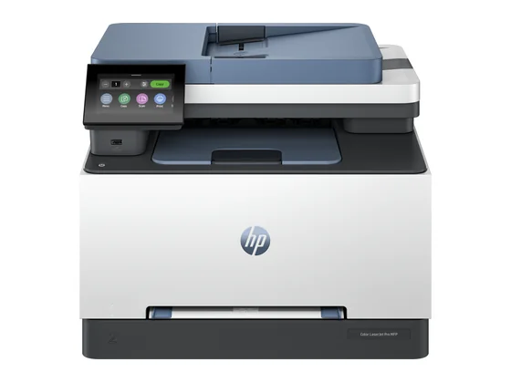
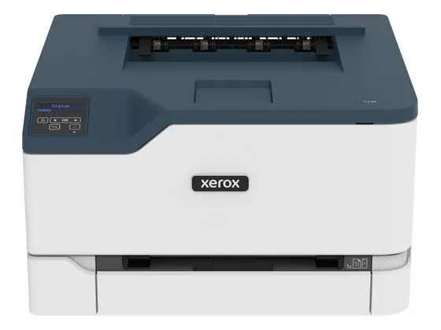
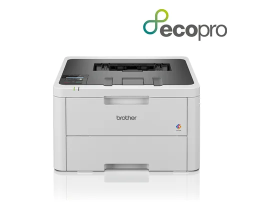
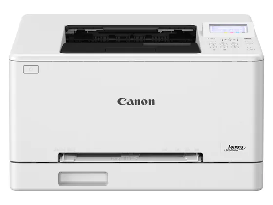

HP Color LaserJet Pro MFP 3302sdw : avis, tests et prix
Le verdict en une phrase. Une multifonction laser couleur complète pour le petit bureau : 25 pages par minute, recto-verso, chargeur de 50 feuilles, écran tactile et Ethernet. Testée par Which?, Tænk et Altroconsumo.
N° 5 sur 10 dans le top 10 Imprimantes laser couleur.

Pour qui ?
Vous équipez un petit bureau qui imprime, copie et scanne beaucoup de documents couleur.
Vous imprimez peu ou manquez de place : une laser plus compacte suffira.
Le consensus de la presse
Les tests recensés ne donnent pas de note chiffrée : nous renvoyons vers les articles plutôt que d'inventer une note.
Où l'acheter
La configuration peut différer d'un marchand à l'autre : vérifiez la fiche avant d'acheter. Le prix Electro Dépôt est celui de son flux produits officiel à la date indiquée ; seul le prix affiché par le marchand fait foi. Seuls les liens Amazon et Electro Dépôt sont affiliés à ce jour ; les autres sont de simples liens directs. Aucun n'influence les notes ni le classement.
Tous les tests recensés
Chaque ligne renvoie vers le test d'origine. Les notes sont converties sur 10 ; « test » signale un article sans note chiffrée. Notre méthode.
- Altroconsumotest
- Tænktest
- Which?test
Les alternatives pour le même usage
Tout le top 10 →
Xerox C230La version imprimante seule de la Xerox C235 : compacte, rapide et de bonne qualité, mais avec un coût d'usage élevé. Livraison longue chez Amazon. N° 4 · La moins chère
Brother HL-L3220CWEUne petite imprimante laser couleur abordable, éligible à l'abonnement toner EcoPro : idéale pour imprimer occasionnellement en couleur sans encre qui sèche. N° 6 · L'imprimante seule
Canon i-SENSYS LBP647CdwUne laser couleur de bureau sans scanner, rapide et compacte, avec recto-verso automatique.Questions fréquentes
Que pense la presse de l'imprimante HP Color LaserJet Pro MFP 3302sdw ?
3 tests presse recensés, sans note chiffrée. Une multifonction laser couleur complète pour le petit bureau : 25 pages par minute, recto-verso, chargeur de 50 feuilles, écran tactile et Ethernet. Testée par Which?, Tænk et Altroconsumo.
Quels sont les points faibles relevés par les tests ?
Prix d'achat élevé ; Grand gabarit (17 kg, 42 × 42 cm) ; Testée sans note publique (associations de consommateurs).
À qui s'adresse le modèle HP Color LaserJet Pro MFP 3302sdw ?
Vous équipez un petit bureau qui imprime, copie et scanne beaucoup de documents couleur. À éviter si : vous imprimez peu ou manquez de place : une laser plus compacte suffira.
Où l'acheter, et à quel prix ?
Comptez environ 420 € (prix indicatif constaté en octobre 2026). Nous l'avons trouvé en vente chez Electro Dépôt. Les prix changent vite et la configuration peut différer d'un marchand à l'autre : seul le prix affiché par le marchand fait foi.